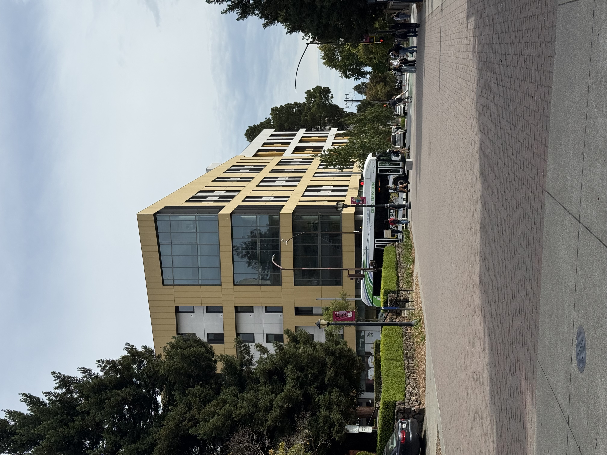
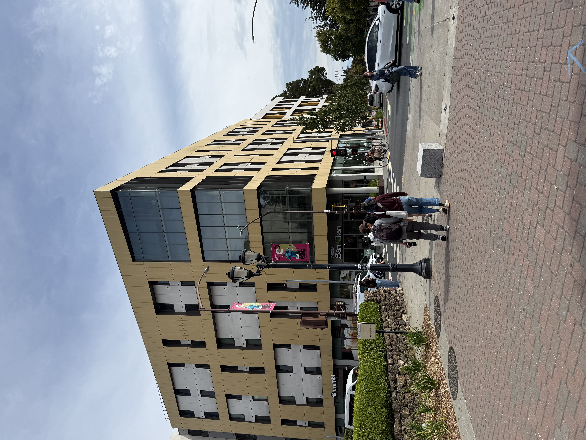

The three parts below show the effects of camera distance and focal length on perspective. The camera on my smartphone was used to shoot the photos.
Overview
Part 1: Selfie — The Wrong Way vs. The Right Way
One selfie taken up close, one taken from farther away and zoomed in so the face is the same size.

Why do the two photos look so different?
When the camera is close to the face, the near parts of the face (nose, chin) appear larger than the far parts (ears, back of head), creating a distorted look. When the camera is farther away and zoomed in, the face appears more natural and proportional.
Part 2: Architectural Perspective Compression
One photo of Stiles Hall shot from far away and zoomed in (compressed), one shot up close without zoom (same building size in frame).


Where does the "compression" effect come from?
A longer focal length narrows the field of view, making distant objects appear closer together and reducing the sense of depth in the image. In contrast, a shorter focal length captures a wider field of view, exaggerating the distance between objects and creating a more pronounced sense of depth.
Part 3: The Dolly Zoom
Camera moving backward while zooming in, keeping the subject the same size in every frame. The background appears to compress as the camera moves.